Digital Mastitis DetectorÅyMILK CheckerÅz
Milk CheckerÅ@MCM-5L
Milk Checker is a digital compact detector that detects bovine mastitis with extreme precision. Through a quick and simple test, Milk Checker is capable of detecting clinical and subclinical mastitis simultaneously within seconds in all four quarters of the udder. Made in Japan, Milk Checker utilizes the most advanced technology to produce reliable results, guaranteeing the health of your herd.
Measurement principle
Milk checker is handy type instrument for cows to measure the electrical conductivity of milk in quarters of udder and to detect mastitis. When inflammation or other mammary disorders occurs, plasma constituents may exudate and cause changes in concentration of electrolytes contained in cow milk such as Na+, CL-, etc. A rise in sodium and chloride content results in increased electrical conductivity in the milk. Milk Checker is based on this principle and can detect abnormalities in the udders quickly and accurately by measuring electrical conductivity of milk.
Advantages
Fast and reliable
An innovative technology, Milk Checker is more reliable than other methods of mastitis detection. Unlike the complicated California Mastitis Test, which is subjective and requires mixing the milk with a solution, Milk Checker numerically displays results on digital display, with decimal precision, thus saving time and money.
Monitors your herdÅfs health
Milk Checker is an important in the management of herd. By using Milk Checker regularly throughout the lactation period, one can easily identify the infected cattle and separate them from the rest of herd. In addition, Milk Checker can also be used to determine the efficiency of antibiotic treatment.
Prevents outbreaks of clinical mastitis
Every year, mastitis outbreaks result in substantial losses for dairy farmers. Therefore, prevention is imperative. It is be able to detect infection at a preliminary stage, when it is still imperceptible. Thus, you avoid the high costs of veterinary treatment, antibiotics, and discarding milk and cattle, etc.
Quality
Milk Checker is a compliant device to Special disease medical guidelines by Mutual Aid Association of Veterinary Japan, as applicable electrical conductivity might be risk of mastitis infection in the quarter. Therefore, Milk Checker is favored mastitis detector in most countries with high quality control of milk such as Japan, Australia, and New Zealand.
The guideline of electrical conductivity for confirmation on mastitisby Mutual Aid Association of Veterinary Japan
| Absolute Conductivity | 6.2mS / cm or more | Abnormal milk |
| Differential Conductivity | 0.5mS / cm or more | Infected |
Why New Milk Checker ?
NEW Features !!
- Sample storage capacity up to 500 samples
- data transfer: suitable for data management by large farmers
- Automatically blinking for abnormal milk: Easy to get the result
- Temperature probe: accurate and stable data in different ambient and milk temperature.
Introduction
What is mastitis??
Åú inflammation f mammary gland in breast or udder.
Åú Due to bacterial infection via a damaged teat.
Åú Mastitis is classified by *Clinical Mastitis / *Subclinical Mastitis / *Chronic Mastitis
Åú Clinical and Chronic mastitis can be physical inspection in milk, but subclinical stage can not be detect by physical inspection, milk appears to be normal in subclinical stage.
What is Subclinical Mastitis?
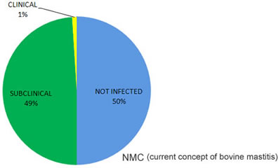Clinical mastitis can be easily detected because "kernels" are found in milk or various changes occur in udder. However it is very difficult to detect latent or subclinical mastitis by visual inspection.
- It is occur by 15-40 times more prevalent than clinical mastitis.
- It usually precedes clinical mastitis.
- It is of long duration.
- It causes reduction in milk production and also adversely affects milk quality. (W.N.Philpot)
ECONOMIC LOSS DUE TO MASTITIS
Decrease of milk quantity caused by subclinical mastitis occupies 70% of total economic loss due to mastitis. Without being aware this disease causes considerable loss to dairy farmers.
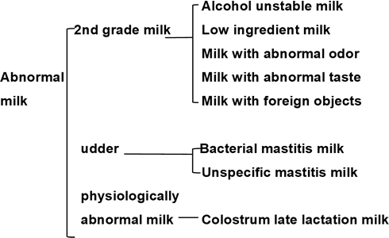
Description
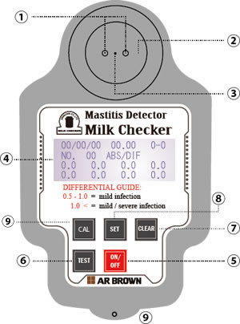| á@ | Small Electrode sensor | This is built in unit, measuring electric conductivity. |
| áA | Temperature Sensor | Electric conductivity is effective on temperature for both of milk sample, ambient and environmental temperature, but it compensates temperature automatically. |
| áB | Sampling Cup | It is designed to ease sampling. |
| áC | Digital Display | Absolute electric conductivity of all quarters are displayed in digital simultaneously, then calculates differential E.C. automatically, and also indicates calibrated electrical conductivity. |
| áD | Power button(ON/OFF) | Press the button first for turning on the power. By pressing it again, power is turned off. If not in operation, the device will turn off by itself after 6 minutes. |
| áE | Measuring button(TEST) | Measurement result of four quarters are displayed in one display simultaneously by pressing TEST button 4 times for individual quarter, and then press this button one more time (the 5th time) for calculation of differential measurement result and abnormal quarter |
| áF | Clear button (CLEAR) | To test next cow, the clear button will erase the previous reading held.The data is possible to be cleared by this button. |
| áG | Set button (SET) | Use this button for various setting. |
| áH | Calibration(CAL) | In case of data communication to PC and use for various setting. Use for calibration |
Comparative vs CMT
| 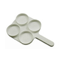 | 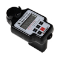 | |
| Can the test be done quickly (within seconds)? | X | ✓ |
| Are the results reliable? | X | ✓ |
| Is the interpretation of data done by computer, with decimal precision? | X | ✓ |
| Can the test be done in an environment with low visibility? | X | ✓ |
| Does it have a digital display? | X | ✓ |
| Can the measurement data save? | X | ✓ |
| Is it possible to control data management by PC? | X | ✓ |
| Does not require use of chemical reagent? | X | ✓ |
| Does it have temperature sensor? | X | ✓ |
How to use Milk Checker ?
With Milk Checker it only takes a few seconds to detect subclinical mastitis. See step by step how to do the test.
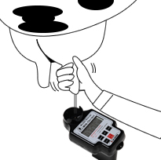
1.Milk the sample directly from the teat of right fore into the collecting cup.
Fill it almost to the brim. (approx 10 ml).
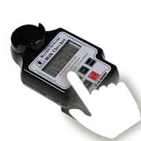
2.Press the button TEST.
The display will show the absolute value of the electrical conductivity (ABS) of the teat on the upper left of the screen.
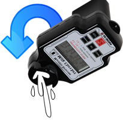
3.Empty the sampling cup.
4.Repeat the process with the second teat from step 2.
Warning: It is not necessary to wash the collecting cup
between the samplings of one teat to another.
The measurement of the second teat will appear on the
upper right of the screen.
Repeat with the remaining teats. After measuring the last teat, Milk Checker will display the 4 measurements in the following order: top left, top right, bottom left, and bottom right. Example below:
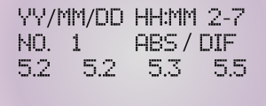
When press ÅgTESTÅh switch on the fifth time, the differential values between four quarters are displayed as below:
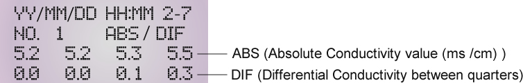
Determination of the outcome
Threshold for abnormal milk based on absolute conductivity values and differential conductivity values and differential conductivity values between quarters of udder.
| Absolute Conductivity value(ms/cm) | Differential Conductivity between quarters | Evaluation |
| 6.2ÅÑ | 0.5ÅÑ | Normal milk |
| 6.2ÅÑ | 0.5ÅÉ | Infected milk |
| 6.2ÅÉ | 0.5ÅÉ | Infected milk(containing low ingredient milk and physiologically abnomal milk) |
| 6.2ÅÉ | 0.5ÅÑ | Low ingredient milk, physiogically abnomal milk |
(In case differential conductivity value between quarters of udder exceed 0.4, there is a risk of mastitis. Consult veterinarian.)
Example of measurement result
- Examples of normal milk
- Examples of mastitis milk (Example 1)
- Examples of mastitis milk (Example 2)
- Examples of low ingredient milk and physiologically abnormal milk

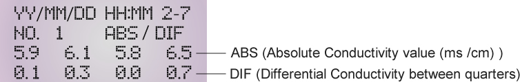
*ABS value of 6.5 and DIF of 0.7 are abnormal milk which infected mastitis.
The device blinks quarters of 6.5 and 0.7.
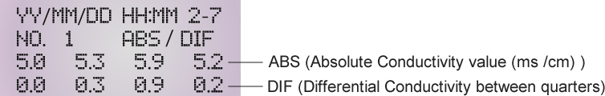
*All of ABS values are under 6.2, but DIF of 0.9 is abnormal milk which infected mastitis.
The device blinks quarters of 0.9.
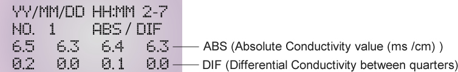
*All of ABS values are more than 6.2, but DIF values are under 0.5.
Important
*The measured values of the absolute electrical conductivity (ABS) may vary according to breed, feed, lactation stage, pathological conditions, stress level, and among other factors of the cow.
*The key to identify subclinical mastitis is in the difference (DIF) between quarters. If the value of difference is greater than or equal to 0.5, the animal is infected. If the difference in value exceeds 1.0 mS/cm, the infection is severe.
*Between one device and another, there may be a variation of up to 0.2 mS/cm in the measurements of absolute electrical conductivity (ABS) for a teat. This variation is normal and does not interfere with the detection of mastitis because the most important aspect is to note the difference (DIF) between the teats, since mastitis does not develop in all teats simultaneously.
Maintainance
- It is necessary to rinse the collection cup once daily after use.
Do not contact hard or sharp objects with the sensors (electrodes and temperature).
Do not use strong chemicals (solvents, thinner, etc.) to clean the appliance. - In the event of collection of colostrum or milk with severe mastitis (lump, blood or pus), it is necessary to wash the sampling cup with detergent.
- To remove lumps, use a soft cloth with neutral detergent.
- Do not immerse the appliance in water or any other liquid.
- Do not drop or bump the unit.
- Do not disassemble or attempt to repair the unit yourself. If necessary, contact your dealer or sales representative.
- When batteries run out, a warning message will appears on the display, and the unit will automatically turn off.
Open the battery compartment (located on the back of the device) with a screwdriver and replace the batteries with new ones (2 AA batteries).
Specification
| Measuring Method: | Measurement of electrical conductivity |
| Calculation: | Differential E.C. is calculated by microcomputer and automatically calibration. |
| Display: | Backlight LCD |
| Measurement Range: | 0 - 13mS/cm |
| Accuracy: | 3% Å} 1 digit |
| Automatic Temperature Compensation: | +3 - 40Åé (compensated at +25Åé) |
| Power Source: | Dry cell battery AA x 2 pcs. |
| Power Consumption: | 140 mA (measuring and backlight on) |
| Dimensions: | 91(w) Å~ 149.5(H) Å~ 118(D)mm |
| Weight: | 320 g |
| Data Communication: | USB cable |
| Real Time Clock: | IC module |
| EEPROM: | Storage 500 data in device |
DOWNLOAD
- Leaflet DOWNLOAD PDF
- Technical Data DOWNLOAD PDF
- Software DOWNLOAD FILE
- Operation Manual DOWNLOAD PDF
- Borochure DOWNLOAD PDF
Contact Us
AR Brown Co., LtdÅ@Hu-Vet dept
VET team
Ginza Mitsui Bldg., 13-1, Ginza 8-chome, Chuo-ku, Tokyo, 104-0061
TEL:+81-3-3545-2881Å@FAX:+81-3-3543-8865